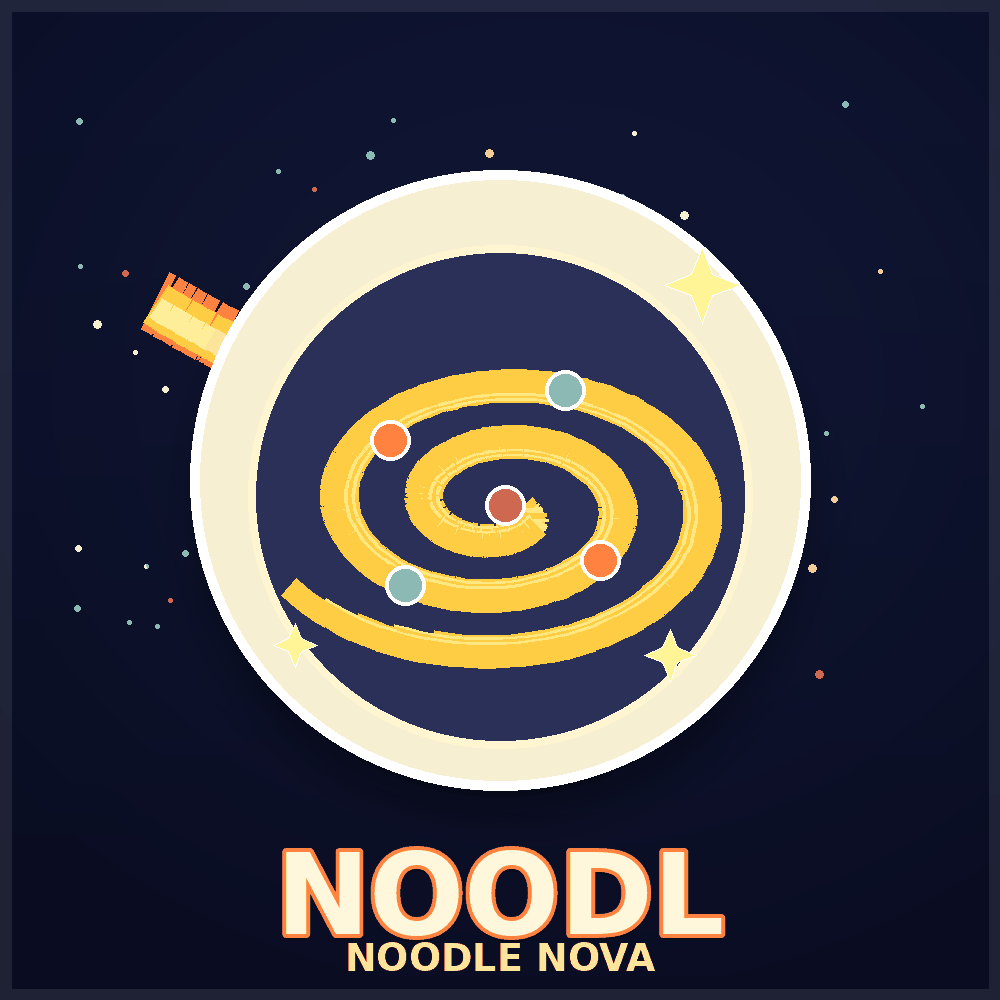

NOODL
NEW · ODIN · HODL: first is first on ODIN•FUN
The first token of the new Odin
NOODL (Noodle Nova) is the first token ever launched on ODIN·FUN v2, the Bitcoin-native launchpad that came back online in July 2026 after nearly a year offline. On 13 July it graduated from its bonding curve into the AMM pool.

Why Bitcoin needed a launchpad like this
Bitcoin traded the third leg of the blockchain trilemma for decentralisation and security: ten-minute blocks, no smart contracts, no pools. However lively inscriptions and runes became, trading still meant order books: you eat whatever someone happened to list, one large ask crushes the tape, and a sell order may simply never find a buyer. ODIN·FUN keeps assets and settlement on Bitcoin while matching moves to a two-second-finality, zero-gas fast layer, with pools instead of order books.
What happened to v1, and what changed
v1 was not killed by a missing market. In its first month it did over 1,000 BTC of volume across thirty-seven thousand addresses, and its first token ODINDOG ran from a few thousand dollars to a $35M cap. What broke it was pace: the ecosystem grew faster than its security infrastructure, a mechanism upgrade shipped with a flaw in it, attackers found the gap, and a security incident followed. The car was fine and the road was fine, the brakes simply had not caught up with the horsepower.
v2 rebuilt the answer to each of those, item by item: deposits sit under threshold-signature (TSS) custody, the vault key is split across independent parties, and no single party, the team included, can move funds. Contract upgrades now pass a 4-of-7 multisig DAO in which the team holds only two seats; platform revenue flows to a 3-of-5 treasury DAO where the team holds none. Individual accounts add 2FA and an instant session padlock. Withdrawals to Bitcoin mainnet are batched, ten minutes at most.
Why "first" is the whole point
No ecosystem takes first-is-first more seriously than Bitcoin's. Bitcoin is the origin of the industry; CryptoPunks of NFT culture; ORDI of the inscriptions era. Each ecosystem's first became that ecosystem's totem, not because of the words "the first", but because it carries the earliest cultural memory of an era, and rises as high as the ecosystem itself grows. NOODL is v2-original: no history on v1, no replica to argue with. When v1's runes and communities migrate across, originals and copies will coexist under the same names, a war of legitimacy NOODL never has to fight.
How far each "first" actually went
Every era of Bitcoin issuance produced exactly one first. Here is what each of them reached at its peak, and where NOODL sits today.
| Asset | Protocol / venue | Start | Peak price | Peak market cap | Max multiple |
|---|
Peak figures are the highest ever reached, not today's price. NOODL's row is read live from the odin.fun API and rises on its own if NOODL makes a new high.
"The first is the first, forever: the only moat in this world that needs no maintenance."
The culture in a bowl of noodles
NOODL reads as New Odin HODL, the new Odin; hold, don't sell. Probably an accident of the deployer, and that is exactly where the magic sits.
One word, two cultures
NOODLE literally means noodles. In Chinese culture noodles stand for what lasts: longevity noodles on birthdays. The West has pasta in endless shapes, yet nobody there ever connected noodles with lasting long. Until Bitcoin handed them the word HODL. NOODL splices the two worlds together: a Westerner reads New Odin HODL instantly, and following that one strand of noodle, understands for the first time that noodles can mean forever.
The wordplay runs deeper in Chinese, where 面 (mián) means both noodles and face: 体面 ti-mian, dignity · 场面 chang-mian, appearances · 情面 qing-mian, mutual regard. Three bowls of mian in a life.
HODL as long-termism
HODL is one of crypto's most important pieces of heritage, a word misspelled in the 2013 bear market that became a generation's creed. Most people arrive to get rich fast; after every cycle rinses through, the communities that remain are the ones willing to build for the long haul. NOODL welded that word into its own name, which gives it a shot at being v2's cultural core: hold on, and accompany the rebirth.
"The cultural density of this coin runs far higher than its market cap."
1 NOODL = 1 noodle
The culture is not only symbolic. One NOODL corresponds to one bowl of ramen, roughly £15, at Noodle Nova in central London: a token anchored, however playfully, to something you can actually eat.
One coordinate, one consensus
v2's biggest opportunity is not the technical upgrade: it is the chance to re-gather communities that used to be scattered.
The lesson of a divided house
The v1 era had a real problem: on-chain players held on-chain consensus, off-chain communities held their own, and different camps backed different assets. Original ODINDOG versus FORSETISCN, the dog and the scales, is the clearest example: both sides were Odin believers, yet the strength never pulled in one direction. Before the ecosystem had grown up, the household had divided.
A healthy rotation of chips
NOODL's community took one full rotation to form. The earliest few dozen came only to farm the launch, flip it for a few hundred dollars and leave; when the bonding curve graduated, that crowd took the money and dissolved. The chips rotated into genuinely convicted hands, and what gathered afterwards reads like a roll call of the v1 era. Veterans who each fought alone back then, converging on one coordinate.
A project's greatest value was never just its code, but how many people's convictions are willing to gather in one place. Backgrounds and styles differ sharply: some believe in the technology, some in the ecosystem, some in the first narrative, some simply in long-term holding, yet everyone sat down at the same table for the same faith. A strong community is never everyone thinking identically; it is a direction commonly believed, grown among entirely different people.
The team that never ran
The first cornerstone of rebuilt trust is people. Through eight months offline the team never went dark: founder Bob Bodily said plainly on the day of the incident that the company treasury could not cover the losses, then worked with OKX and Binance to freeze stolen funds, cooperated with law enforcement on both sides of the Pacific, commissioned an external audit, and honoured deposits 1:1 at relaunch. The plan after two thefts was not to dump the hole onto users, but to restart, raise fees, and repay v1's losses out of the platform's own earnings. The community's nickname for him, the Legendary Theft-Proof King, is affectionate and exhausted in equal measure.
"In an industry where running away costs nothing, a team that doesn't run is itself the scarcest asset."
The empty slot on the biggest chain
Every large chain eventually produced one meme that came to stand for the whole thing. Ethereum got SHIB, Solana got BONK, Base got BRETT. Bitcoin never did: the oldest chain, the largest, the one carrying the most cultural weight in the industry. This section starts there, with the absence, and not with NOODL.
Why the oldest chain never got one
It was never a shortage of tokens. Bitcoin's ecosystem has produced countless of them: coloured coins, Genesis spells, rare pepes, Counterparty, Ordinals, BRC-20, Runes. That is more than ten years of issuing things on Bitcoin. What was missing was a venue where a Bitcoin asset could trade at lightning speed. Ten-minute blocks and order books are a fine way to settle a treasury and a poor way to run a punchline: you eat whatever someone happened to list, and a sell order may never find a buyer at all. The other half is temperament. Bitcoin's culture was built on refusing to be a casino, so the tokens that did appear got treated as protocol artefacts to be collected rather than jokes to be repeated. ORDI comes closest to a defining Bitcoin-ecosystem asset, and it is a claim on a standard rather than a culture with a punchline attached. Ten years, seven token eras, no totem.
A meme is downstream of its venue
Odin describes itself as the fastest way to trade tokens on Bitcoin, and the mechanics are specific enough to check line by line. A layer called Valhalla gives two-second finality and no gas fees at all; deposits cross a bridge called Bifrost under threshold signatures, the same mechanism family used by tBTC, Arch and ICP. Tokens open on a bonding curve, sell 80% of supply along it for 0.211 BTC, and then ascend, the remaining fifth plus 0.2 BTC drops into an AMM pool. Creating one costs 3,333 sats: small enough to be nothing, large enough to make spam tedious. None of that is decisive on its own; pump.fun proved a bonding curve is easy to copy. What is harder to copy is the part that decides whether a venue is still there in three years, contract upgrades need a 4-of-7 multisig in which the team holds two seats, and revenue sits in a 3-of-5 treasury multisig in which it holds none. A coin meant to be held for years cannot outlive the place it trades. Those numbers are either the foundation of the whole argument or entirely beside the point, depending on whether anyone ever comes to care about them.
What the slot is actually shaped like
The chain-defining memes follow a pattern, and it is not that the best token wins. SHIB arrived on the back of DOGE's cultural slipstream and Ethereum's retail wave. BONK launched in December 2023 into the post-FTX trough, framed from day one as a gift to a demoralised community, and became the ticker people bought when they wanted to express a view on Solana itself rather than on any project; WIF followed it. BNB Chain, for all its volume, never produced a lasting one, and TRON's SUNDOG stayed local. Two things recur. These tokens show up at a chain's low point or its comeback moment rather than at its peak, at a peak there is nothing left to express, because everyone already agrees. And they win by turning into shorthand for the chain's story rather than equity in a product.
The pendulum of flow has swung this way before. In January 2025 the TRUMP coin marked the climax of the pump.fun era, and one week after it topped, Odin v1 was announced, receiving the capital that went looking for somewhere to build. In July 2026 Robinhood's own chain went live and was promptly occupied by memes, until noxa, the launchpad behind three quarters of its deployments, went dark for two days and the community erupted in soft-rug accusations. Same pendulum, same position, and Odin v2 restarted at precisely that moment.
Everything above is pattern-matching, and pattern-matching is not evidence. "It rhymes with BONK" is a sentence that will be true of twelve tokens on Odin within a year and false of eleven of them. With that said: NOODL is the first token on v2, and v2 is itself a rebuild after an incident, structurally the low point the pattern asks for. Being first is a fact rather than a claim on attention, but it is a fact that cannot be revised later. Its name is an argument rather than an animal: New Odin HODL, a thesis you can say in one breath. And it is food, which travels: noodles already mean longevity in Chinese, HODL supplies the same idea in English, so the joke survives translation, which is the one thing a chain-defining meme has to do. None of that is demand. NOODL is still very early. Every chain-defining coin was small once, and so were the several hundred that stayed small.
What makes the thesis worth stating at all is the size of the room rather than the size of the token. A filled slot on a small chain is worth whatever that chain is worth. An empty slot on the largest chain is a bigger room, but only if it is empty for want of a venue, and not because Bitcoin's holders looked at the seat and decided they never wanted anyone in it. What would close that distance is not price. It is a change in what the ticker gets used for.
What would have to be true
Odin has to become the default venue for Bitcoin memes rather than one of several, which is a distribution problem no token can solve on the platform's behalf. NOODL's holder base has to grow by orders of magnitude while behaving like holders, and the culture has to be carried by people who were not there at the start, a meme only its earliest owners can explain is a private joke. What would falsify it: another token on Odin becoming the community's chosen way to express the chain, which is the ordinary outcome rather than the exception. A rival Bitcoin venue with better distribution taking the slot instead. Another security incident, after which none of the above matters. Or the quietest case, which is also the base case: most memes on most chains stay roughly where they are forever. One asymmetry is worth ending on: nobody has ever chosen a chain-defining coin on purpose. SHIB and BONK were anointed by crowds after the fact. A website cannot do it, a team cannot do it, and a holder count this size is not a crowd.
The road to Nova
Everything below unlocks by market cap. Later stages stay sealed until the milestone is actually reached, no promises made in advance.
First it was a token. Then it became a culture. Finally, it became a movement.